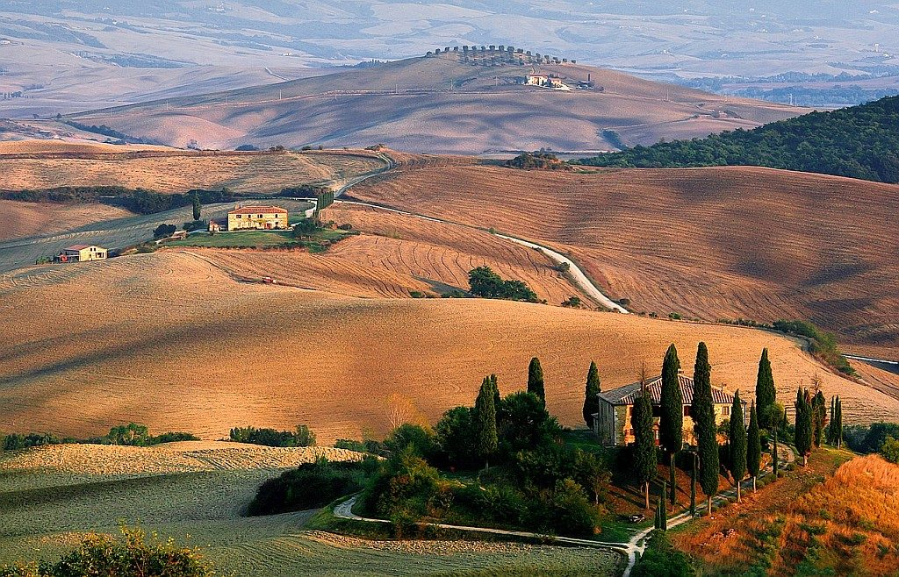

<!DOCTYPE html>
<html lang="hu">
    <head>
        <meta charset="UTF-8">
        <meta http-equiv="X-UA-Compatible" content="IE=edge">
        <meta name="viewport" content="width=device-width, initial-scale=1.0">
        <link rel="stylesheet" href="https://maxcdn.bootstrapcdn.com/bootstrap/3.4.1/css/bootstrap.min.css">
        <link rel="icon" href="Images/asd.png">
        <link rel="stylesheet" href="css.css">
        <script src="https://ajax.googleapis.com/ajax/libs/jquery/3.6.0/jquery.min.js"></script>
        <script src="https://maxcdn.bootstrapcdn.com/bootstrap/3.4.1/js/bootstrap.min.js"></script>
        <title>Toszkána Földrajza</title>
    </head>
<body>
</body>
</html>
<html>

<head>
    <meta http-equiv="X-UA-Compatible" content="IE=edge">
    <meta name="viewport" content="width=device-width, initial-scale=1.0">
</head>

<body>
    <h1>Földrajza</h1>

    <div class="row">
        <div class="col-12 col-md-6 p-2">
            <div class="p-3 h-100 info">
                <div class="card" style="width: 80%;margin:auto">
                    <h2>Földrajz</h2>
                    
                    <div>
                        <p class="kek">Toscana Közép-Olaszország talán legszebb régiója – már amennyire érdemes ilyen típusú sorrendet felállítani. Partjait a Tirrén- és a Ligúr-tenger alkotja, a szárazföldi határait más olasz régiók képezik. 
                            Kulturális és művészeti szempontból az egyik leggazdagabb része Itáliának, történelme az egész ország szempontjából kiemelkedő jelentőségű.</p>                    
                            
                    </div>
                  </div>
            </div>
        </div>
        <div class="col-12 col-md-6 p-2">
            <div class="p-3 h-100 info">
                <div class="card" style="width: 80%; margin:auto">
                    <h2>Tuszkana</h2>
                    
                    <div>
                        <p class="piros">Területén mintegy 25%-ban találunk hegyeket, ez leginkább az Appenninek láncait jelenti, mely észak és keleti irányból képez természetes védelmi vonalat a régió köré. 
                        Síkságokban szűkölködik a régió, felszíne leginkább dombosnak mondható; ezt a milliónyi, tipikusan a régiót jellemző kép, promo-fotó készítésekor kihagyhatatlan elemként szorgalmasan mindig meg is jelenítik.</p> 
                    </div>
                    </div>
                  </div>
            </div>
        </div>
    </div>
    <div class="row">
        <div class="col-12 col-md-6 p-2">
            <div class="card" style="margin-left: 50px;">
            
        </div>
            <p>Toscana klímája a hegyek és a tenger közelsége miatt területenként más-más 
                jellemzőket mutat, így egyetlen szóval nem is könnyű leírni. A nyarak kimondottan melegek, főleg a síkabb területeken, a völgyekben, ahol nem ritkán 40°C fok is lehet; a 
                hegyvidéki területeken pedig a telek hordoznak erősebb vonásokat, a téli időszakban gyakran havazik.</p>
    </div>
</div>


</body>